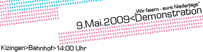

Wir dokumentieren hier den Aufruf des Infoladens Kitzingen zu ihren Feierlichkeiten zum 08. Mai, die wegen Terminproblemen erst am Samstag den 09. Mai stattfinden. Weitere Infos unter dem Blog der antifaschistischen Linken Kitzingen.
Vom Mordkollektiv…
Am 8. Mai 1945 endete ein an Grausamkeit noch nie gesehenes Kapitel in der Geschichte mit dem Sieg der Alliierten über Deutschland. Für die verfolgten Menschen in Europa bedeutete die militärische Zerschlagung Deutschlands Befreiung von der deutschen Barbarei, für die verbliebenen Jüdinnen und Juden, Roma und Sinti, so genannte Behinderte, Homosexuelle und NS- Gegner bedeutete der Tag Befreiung und die Gewissheit, dem Tode entkommen zu sein. Sechs Mio. Jüdinnen und Juden wurden von der deutschen „Volksgemeinschaft“ industriell vernichtet. Alleine in Kitzingen wurden am 21. März 1942 76 Jüdinnen und Juden verschleppt und in das Konzentrationslager von Izbica deportiert, weitere 19 wurden am 21. September in das Ghetto in Theresienstadt verschickt. Niemand kehrte je davon zurück. [1] Dem Vernichtungskrieg der Deutschen fielen mehr als 40 Millionen Menschen zum Opfer.
Dennoch fühlten sich die meisten Deutschen nicht befreit, sondern besiegt. Sie hatten sich am Morden an den Fronten beteiligt, in den Konzentrationslagern gemordet und den von den Deutschen lange Hand geplanten Mord in den „Vernichtungsfabriken“ mit gestützt, ZwangsarbeiterInnen beschäftigt, kommunistische NachbarInnen denunziert und viele weitere Verbrechen begangen, ohne scheinbar jemals ein Unrechtsbewusstsein zu entwickeln oder verspürt zu haben. Sie bildeten die jubelnde Mehrheit der Deutschen, ohne die der Nationalsozialismus nicht möglich gewesen wäre. Der Kitt für diesen Wahn war die deutsche Ideologie, in ihrer besonders radikalen Ausprägung.
… und seiner Ideologie.
Die/der deutsche Ideologie/Wahn [2] fand weder im Nationalsozialismus ihren Anfang noch nach diesem ihr Ende. Vielmehr entstand sie im 19. Jahrhundert in einer klaren Abgrenzung zu den Werten der Aufklärung. Mit dem Entstehen des Kapitalismus wurde ein großer Nationalstaat erforderlich, um der kapitalistischen Verwertungslogik aus Staat und Nation bestehend, einen Rahmen zu geben. Die Existenz eines großen Nationalstaates erforderte aber auch eine besondere Form der Ideologie.
So ist Ablehnung bürgerlicher Ideale, wie sie in den Vereinigten Staaten und Frankreich eingefordert wurden und die nur mäßige bürgerliche Revolution sind deutliche Anzeichen für die Besonderheit der deutschen Nation, in der sich die Verschmelzung von Nation, Staat und Gesellschaft besonders radikal vollzog. Der Nationalsozialismus versuchte, die gegensätzlichen Interessen die durch die kapitalistische Logik bedingt sind, durch einen verkürzten Antikapitalismus und Anti-Semitismus, unter dem Dach der Volksgemeinschaft zu vereinen. Die Aufhebung des Widerspruchs des Glücksversprechens und dessen nicht-Realisierbarkeit in der Volksgemeinschaft hatten die Folge, dass das Bewahren einer gewissen Individualität diese Erinnerung an das Glücksversprechen erneut ins Gedächtnis rief was wiederum den Hass des Kollektivs auf die außen stehenden Subjekte erzeugte [3] zwangsläufig wurde ein Feindbild geschaffen, welches die Juden als „raffend“, „hinterlistig“ und als „bolschewistisch“ titulierte, die tüchtigen Deutschen als „schaffend“ biologisierte. Durch diese Biologisierung einer „Rasse“ wurde der Anti-semitismus zum Selbstzweck, was bedeutet das der Vernichtung der Juden keine Funktion innerhalb der kapitalistischen Verwertungslogik zukommt, sie war sich selbst Zweck. Ausrottung der Ausrottung willen.Auschwitz zwang den Menschen einen neuen kategorischen Imperativ auf, ihr denken und handeln so einzurichten, dass Auschwitz sich nicht wiederhole, nichts ähnliches geschehe. [4]
Auf geopolitischer Ebene wurde der Holocaust allerdings zur Rechtfertigung deutscher Großmachtpolitik funktionalisiert. So führte Deutschland bereits 1998 einen Angriffskrieg gegen Jugoslawien und das nicht trotz sondern wegen Auschwitz, so die verquere Argumentation.„…aber Israel!“
Spricht man von der Vernichtung der Juden, der Shoa, muss man auch vom Staat der überlebenden der Shoa sprechen: Israel! , der zu einer historischen Notwendigkeit geworden ist – nicht aufgrund seines Charakters als Nationalstaat, sondern als Selbstverteidigungsoption und Schutzraum gegen Anti-semitInnen.
Wenn der moderne Anti-Semitismus also letztlich auf der Form kapitalistischer und national-staatlicher Vergesellschaftung basiert, dann werden seine Vernichtungspotenziale solange bestehen, so lange seine Vergesellschaftung besteht – und solange ist die Existenz des Staates Israel eine Notwendigkeit. Ein verlorener Krieg unter heutigen Bedingungen in Nahost heißt für die dort ansässigen Jüdinnen und Juden abermalige Vertreibung und schlimmstenfalls die Vernichtung. Doch gerade dass ist es, was sich momentan durch die Islamische Republik des Iran, (der Hisbollah, der Hamas oder anderen höchst anti-semitischen Organisationen) manifestiert, die offen mit der Vernichtung Israels droht, deren wichtigster westlicher Handelspartner ausgerechnet Deutschland ist. [5]
Die Verteidigung des israelischen Existenzrechts, liefert hingegen immer wieder Vorwand für antisemitische Manifestationen, die in Deutschland auf Zustimmung breiter Teile der Bevölkerung treffen. Die weit verbreitete Aussage, Juden hätten zu viel Einfluss, halluziniert eine „jüdische Übermacht“ im Verborgenen und steht in der langen Tradition antisemitischer Verschwörungstheorien. Diese Vorurteile sind gekoppelt mit einer Schuldabwehr von Deutschen die sich als „die echten Opfer“ begreifen, denen noch immer nicht verziehen wurde. Solch sekundärer Antisemitismus ist in Deutschland noch viel weiter verbreitet, über 60 Prozent der Deutschen ärgern sich darüber, dass „den Deutschen auch heute noch die Verbrechen an den Juden vorgehalten“ werden. [6] Für uns bleibt es dabei, es darf keinen Schlussstrich geben.
…es muss um mehr gehen, als Sonnenschein
Gerade in diesem Jahr, dem „Superwahljahr“ und den Festlichkeiten zu 20 Jahre Mauerfall und 60 Jahre BRD ist es wichtig Deutschland zu zeigen, wo und wie man sich positioniert. Dies gilt natürlich auch für die Krise in der weiterhin fleißig an den Staat appelliert wird, anstatt das Glücksversprechen des Kapitalismus einzufordern! Für uns kann es auch weiterhin kein richtiges Leben im Falschen geben[7] Es gilt eine Gesellschaft ein zufordern, in dem die freie Entwicklung eines jeden die Bedingung für die freie Entwicklung aller ist!
***
Wir wollen den diesjährigen 8.Mai nutzen, um den Sieg der Alliierten gebührend zu feiern. Deshalb wird es einen Party-demonstrationszug durch Kitzingen geben. Anschließend lassen wir den Tag beim Grillen und einer Soli-party für und mit dem Kitzinger Infoladen auf dem Platz hinter der Synagoge am Main ausklingen. Kommt nach Kitzingen und sagt mit uns: Spassibo, merci, thank you!
Infoladengruppe Kitzingen!
